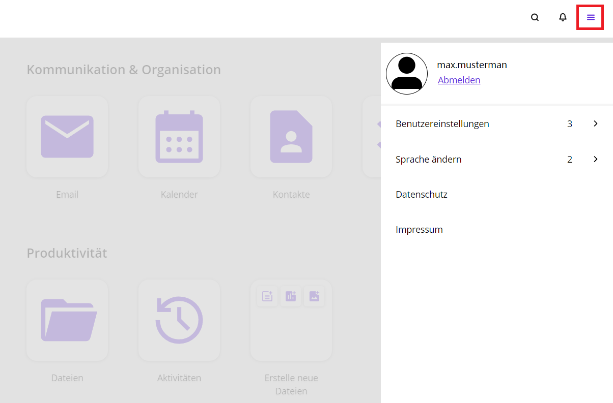
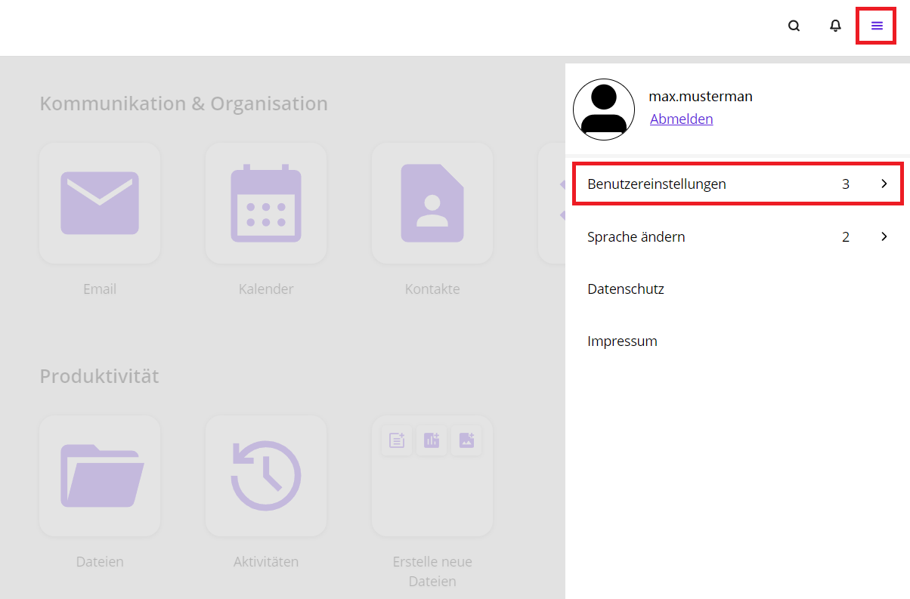
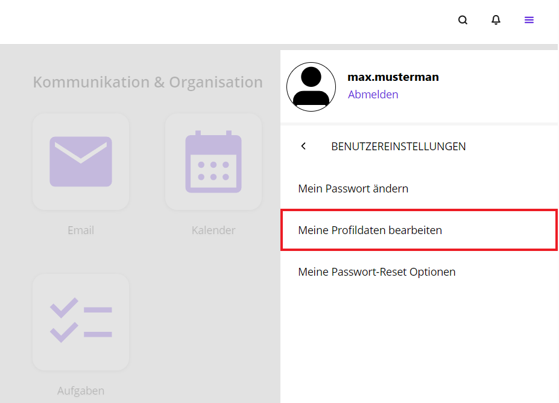
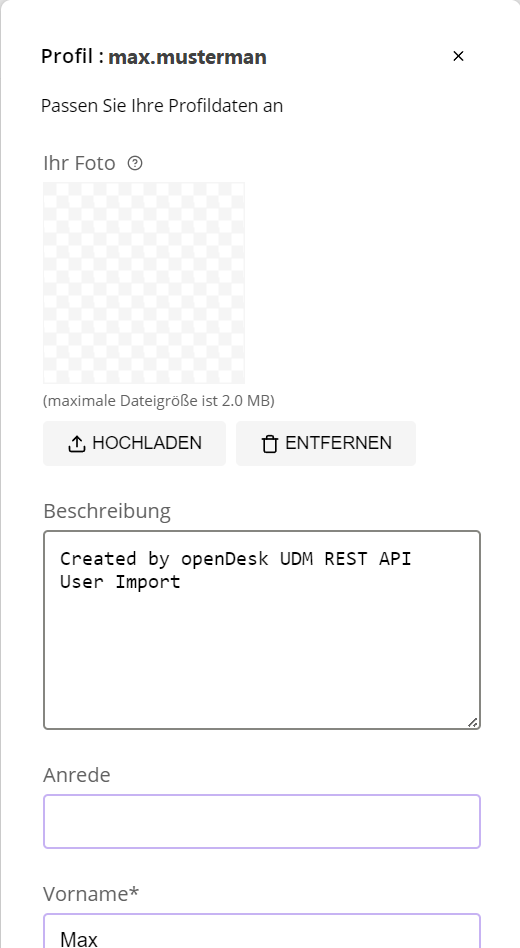
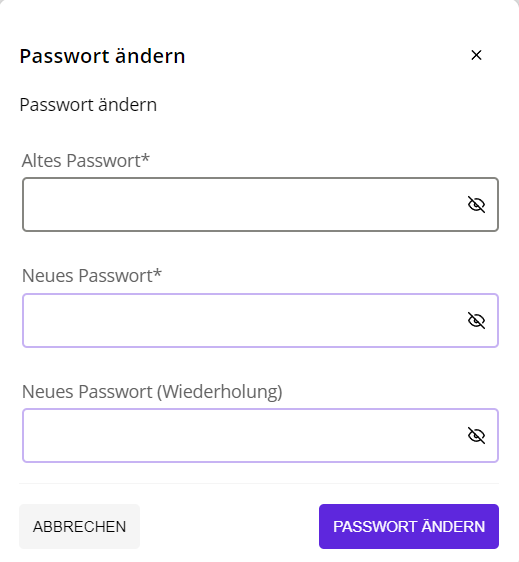
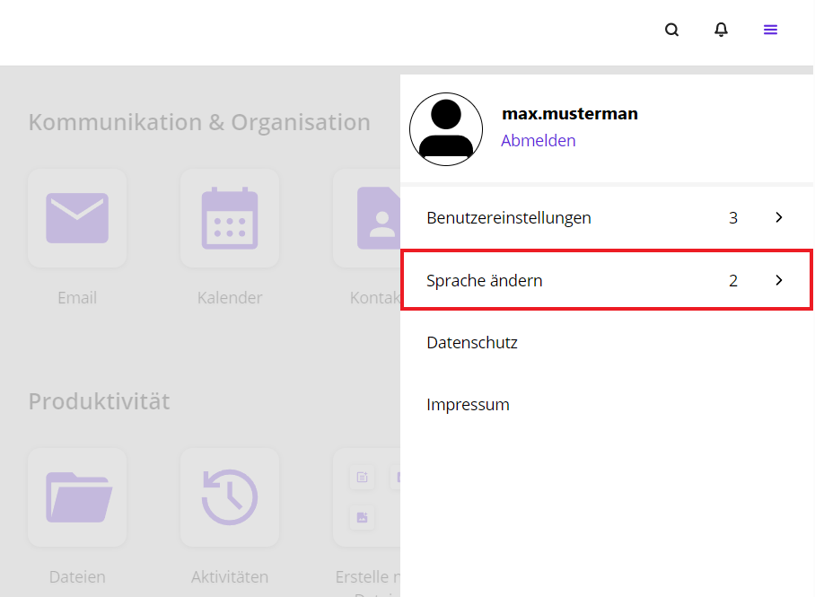
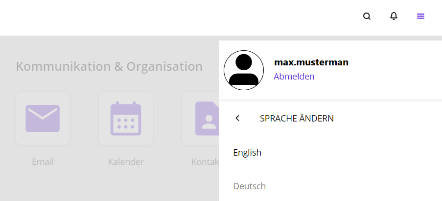
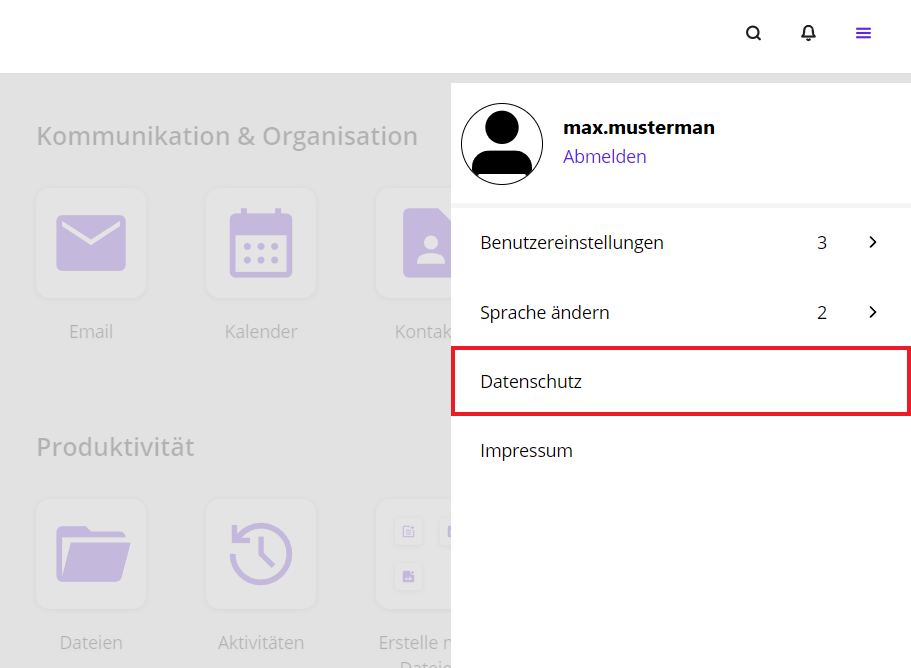
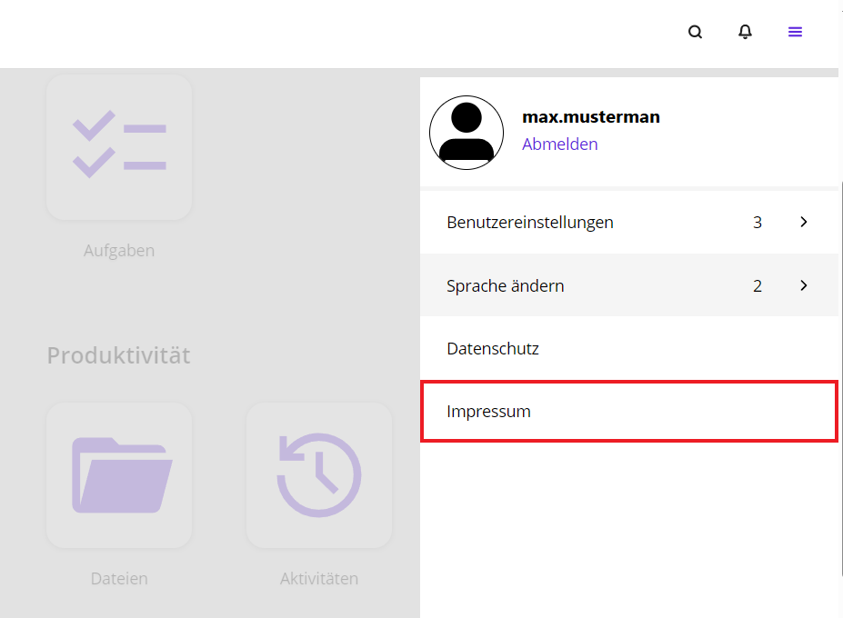

10 Self Service
Im Self-Service-Portal können Sie Ihre Einstellungen ändern. Mit einem Klick auf das Hamburger-Menü bekommen Sie einen Überblick über die Möglichkeiten der Einstellungsänderungen.

10.1 Benutzereinstellungen
Um zu den Benutzereinstellungen zu gelangen, müssen Sie auf das Hamburger-Menü klicken. Dieser befindet sich in der Kopfzeile auf der rechten Seite. Eine Seitenleiste öffnet sich. Klicken Sie auf Benutzereinstellungen.

In den Benutzereinstellungen haben Sie folgende Einstellungsmöglichkeiten:
- Mein Passwort ändern
- Meine Profildaten bearbeiten
- Meine Passwort-Reset Optionen

10.2 Profildaten bearbeiten
Im Hamburger-Menü finden Sie unter Benutzereinstellungen den Unterpunkt Meine Profildaten bearbeiten.
Hinweis: Es ist möglich, dass Sie sich erneut anmelden müssen. Geben Sie erneut Ihren Benutzernamen und Ihr Passwort ein.

Daraufhin erhalten Sie die Möglichkeit, Ihre Profildaten zu ändern. Das können beispielsweise Ihr Foto, Ihr Name, Ihre Organisation oder eine Adresse sein.

10.3 Kontozugang schützen
Der Unterpunkt Mein Passwort-Reset Optionen gibt Ihnen die Möglichkeit, Ihre Konto-Wiederherstellungsoptionen hinzuzufügen oder zu aktualisieren.
Hierfür müssen Sie erneut Ihren Benutzernamen und Ihr Passwort eingeben.

Anschließend erhalten Sie die Möglichkeit, Ihre E-Mail-Adresse zu ändern. Geben Sie die von Ihnen gewünschten und benötigten Daten ein und klicken Sie danach auf Abschicken.
10.4 Passwort ändern
Unter den Benutzereinstellungen können Sie über den Unterpunkt Mein Passwort ändern ein neues Passwort wählen.

Geben Sie erst Ihr altes Passwort ein, um im Anschluss ein neues Passwort einzugeben. Wiederholen Sie Ihr neues Passwort und klicken Sie auf Passwort ändern.
10.5 Sprache ändern
An Ihrem Arbeitsplatz können Sie die Sprache innerhalb des Portals ändern. Hierzu wählen Sie das Hamburger-Menü aus und wählen Sprache ändern.

Sie können zwischen Englisch oder Deutsch wählen.

10.6 Globale Benachrichtigungen
Innerhalb des gesamten Arbeitsbereiches können Sie Benachrichtigungen erhalten. Diese werden am oberen Rand eingeblendet und können über einen Klick auf die Schaltfäche Schließen in der rechten oberen Ecke der Benachrichtigungen wieder ausgeblendet werden. Je nach Art der Benachrichtigung muss diese auch über die Schaltfläche Bestätigen quittiert werden. Die Farbe und der Inhalt wird durch eine Administratorin oder einen Administrator festgelegt.
10.7 Datenschutz
Während der Nutzung Ihres Arbeitsplatzes werden Daten von Ihnen erfasst und verwendet. Zum Schutz Ihrer Daten gibt es einen Datenschutzhinweis, der sich nach der Datenschutz-Grundverordnung richtet. Sie können Antworten auf Ihre offenen Fragen bekommen und erfahren, welche Gestaltungsmöglichkeiten es im Umgang mit Ihren Daten gibt.
Diese finden Sie unter dem Hamburger-Menü. Rechts öffnet sich eine Seitenleiste.

10.8 Impressum
Im Impressum können Sie nachlesen, wer die presserechtlich Verantwortlichen für die Text-, Wort- oder Bildbeiträge dieser Seite sind.
